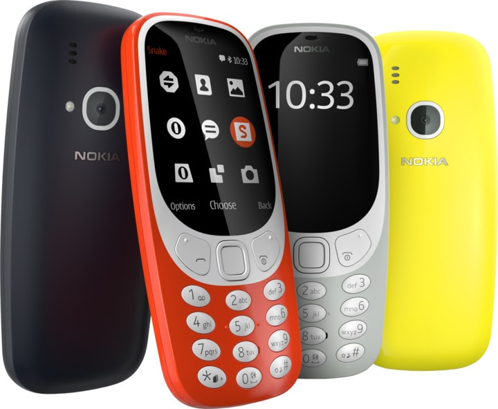

Sale de nuevo a la venta el Nokia 3310, el móvil que ya no es 'indestructible'
Simarjeet Singh | 28/05/2017 - 09:00 CEST
Este miércoles sale a la venta la nueva versión del Nokia 3310, el icónico modelo salido a principios del año 2000,
nocido por muchos como 'el indestructible' debido a su alta resistencia a los golpes y caídas en comparación con modelos más actuales.
A diferencia del original, este nuevo modelo cuenta con una forma más redondeada y una pantalla de 2,4 pulgadas curvada y polarizada.
Además, es más fino y ligero. Su precio es de 50 euros.
Posee 2G llamadas y mensajes de texto y también tienes dos SIM, por lo que puede usarse con dos números de teléfono simultáneamente.
Aunque es incompatible con Whatsapp, cuenta con una aplicación de mensajería llamada GroupMe, pero sólo los Nokia 3310 pueden acceder a ella
y no está accesible para móviles inteligentes modernos.
El Nokia 3310 recupera el teclado físico con 12 teclas, 10 para números y letras y dos para el asterisco y la almohadilla.
También tiene una cámara, pero sólo de 2 megapíxeles.